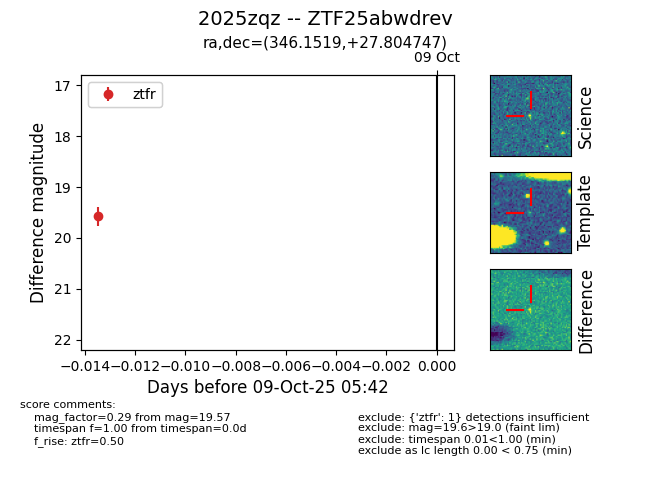

FINK: ZTF25abwdrev
Lasair: ZTF25abwdrev
ALeRCE: ZTF25abwdrev
TNS: 2025zqz
YSE: 2025zqz
ZTF25abwdrev (ztf,fink)
2025zqz (tns,yse)
equatorial (ra, dec) = (346.1519,+27.80475)
galactic (l, b) = (95.7893,-29.37644)

last ztfr=19.57
1 ztfr detections